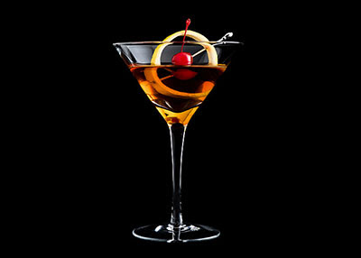

Manhattan
맨해튼
#조용한 밤 #클래식 #달콤하고 부드러운 #탄산 없음 #적당한 도수

Ingredients
- 라이 위스키 50ml
- 스위트 베르무트 20ml
- 앙고스투라 비터스 1dash
- 얼음 100g
- 칵테일 체리
Recipe
- 믹싱 글라스에 얼음을 채워줍니다.
- 라이 위스키 50ml에 스위트 베르무트 20ml를 넣고 섞어줍니다.
- 앙고스투라 비터스 1dash를 넣고 다시 섞어줍니다.
- 칵테일 글라스에 체리와 함께 따라줍니다.
- 마지막으로 칵테일 체리를 올려 장식하면 완성!
History
맨해튼은 위스키, 스위트 베르무트, 비터스를 섞어 만든 칵테일입니다.
맨해튼의 탄생에 관해서는 여러 설이 있지만, 1850년대부터 1880년대 사이에 탄생한 것으로 추정된다.
유력한 설으로는 1870년대 뉴욕의 맨해튼 클럽에서 유래했다는 설과 1860년대 브로드웨이 근처 술집에서 유래했다는 설이 있습니다. 1884년 찰리 폴의 '아메리칸 앤드 아더 드링크스' 등 초기 문헌에 기록되었으며, 금주법 시대에는 캐나다 위스키를 사용했습니다. 맨해튼은 현재까지 다양한 변형이 존재하며, 블랙 맨해튼, 드라이 맨해튼, 롭 로이 등이 있습니다